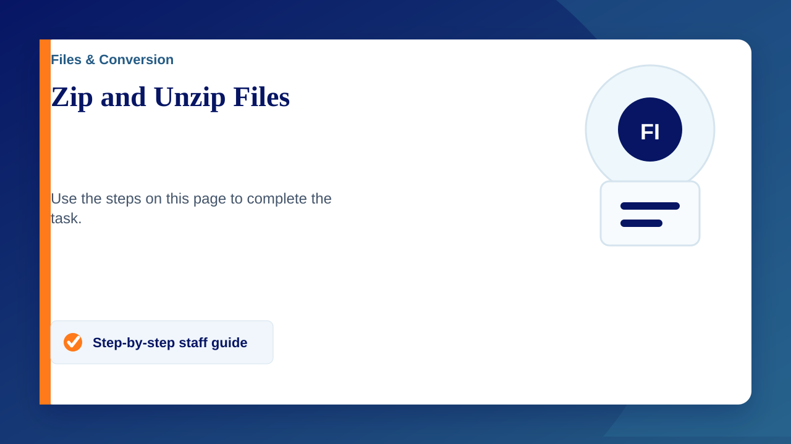

Zipped (compressed) files take up less storage space and can be transferred to other computers more quickly than uncompressed files. In Windows, you work with zipped files and folders in the same way that you work with uncompressed files and folders. Combine several files into a single zipped folder to more easily share a group of files.
To zip (compress) a file or folder
- Locate the file or folder that you want to zip.
- Press and hold (or right-click) the file or folder, select (or point to) Send to, and then select Compressed (zipped) folder.
A new zipped folder with the same name is created in the same location. To rename it, press and hold (or right-click) the folder, select Rename, and then type the new name.
To unzip ( extract ) files or folders from a zipped folder
- Locate the zipped folder that you want to unzip (extract) files or folders from.
- Do one of the following:
- To unzip a single file or folder, open the zipped folder, then drag the file or folder from the zipped folder to a new location.
- To unzip all the contents of the zipped folder, press and hold (or right-click) the folder, select Extract All, and then follow the instructions.
Notes:
- To add files or folders to a zipped folder you created earlier, drag them to the zipped folder.
- If you add encrypted files to a zipped folder, they'll be unencrypted when they're unzipped, which might result in unintentional disclosure of personal or sensitive information. For that reason, we recommend that you avoid zipping encrypted files.
- Some types of files, like JPEG images, are already highly compressed. If you zip several JPEG pictures into a folder, the total size of the folder will be about the same as the original collection of pictures.